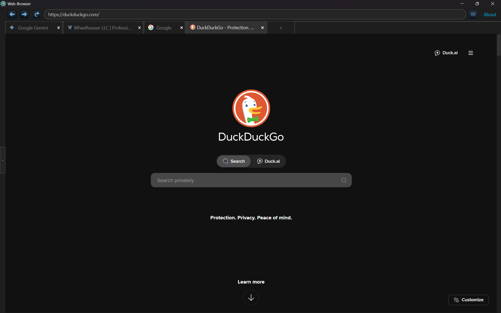
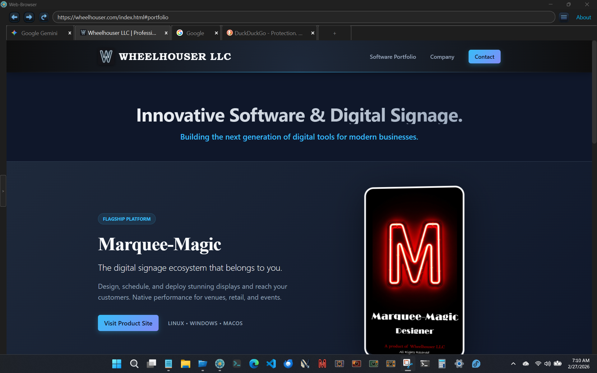
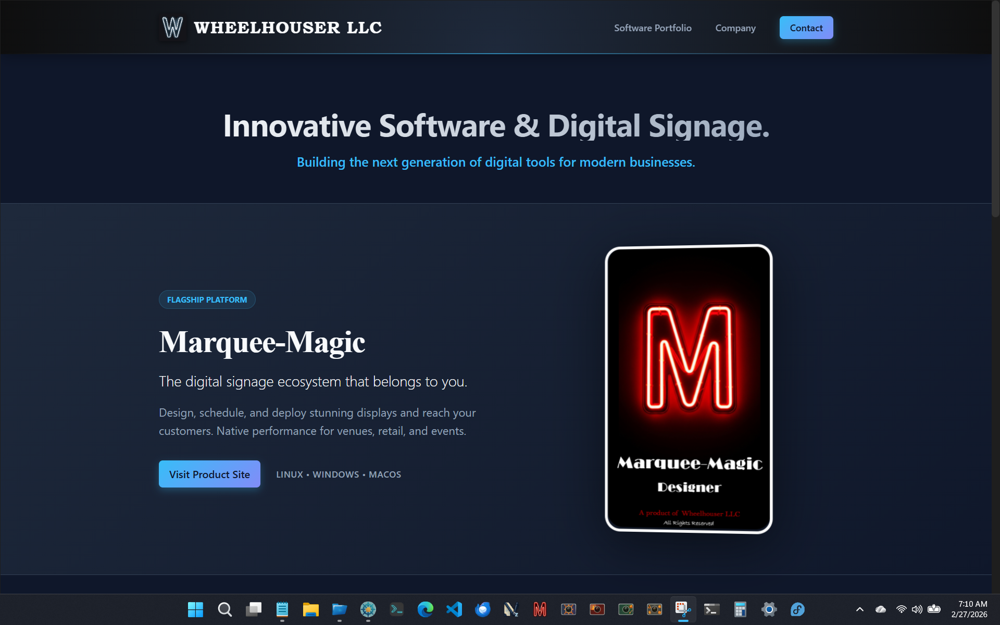
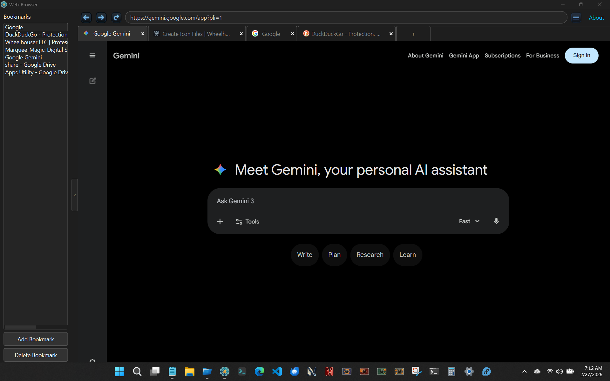

Web Browser
Fast, modern, privacy-focused desktop web browser with native dark mode.




Scroll for more images →
About the Application
Web Browser is a sleek, ultra-responsive desktop web browser engineered by Wheelhouser LLC. Built on QtWebEngine and Chromium with Python, it delivers blazing-fast browsing performance combined with a cohesive, handcrafted dark UI.
Featuring built-in tracker blocking, multi-tab session persistence, integrated on-the-fly media streaming, and local file explorer integration, Web Browser gives you full control over your web navigation without intrusive data collection.
Key Features
- Wheelhouser Dark Mode: Ergonomic dark aesthetic applied across chrome, tab bar, URL controls, menus, and web canvases.
- Built-in Media Streamer: Instant seekable playback for web videos and local media files with real-time stream transcoding.
- Smart Bookmarks & Session Memory: Rich bookmark tree with automatic live favicons and seamless multi-tab session restoration.
- Privacy & Security First: Chromium turbo optimizations, JavaScript clipboard sandboxing, and integrated ad & tracker blocking.
- Unified Web & Local File Explorer: Seamlessly browse websites and local directories with IDE-style extension icons.